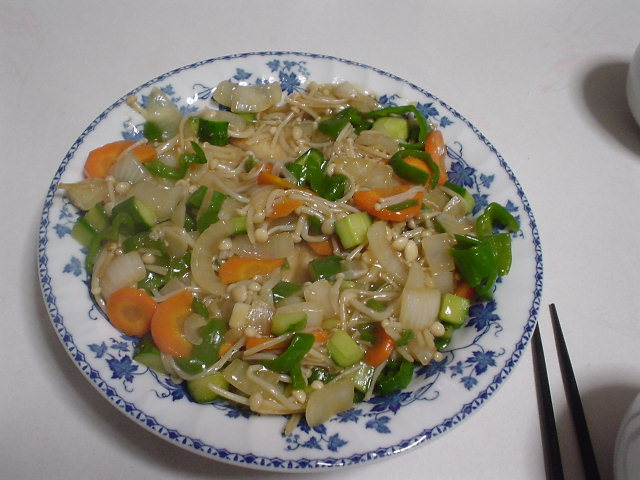

前の写真
2003-06-13
次の写真
鰆の野菜あんかけ

撮影日時: 2003-06-13 00:41:09
すっかり隠れてるけど、野菜あんかけの下には、鰆のムニエルが埋まってます。
[Cookpad:24520]
を参考にした。
前の写真
2003-06-13
次の写真
高久雅生 (Takaku Masao)
http://nile.ulis.ac.jp/~masao/
,
masao@ulis.ac.jp